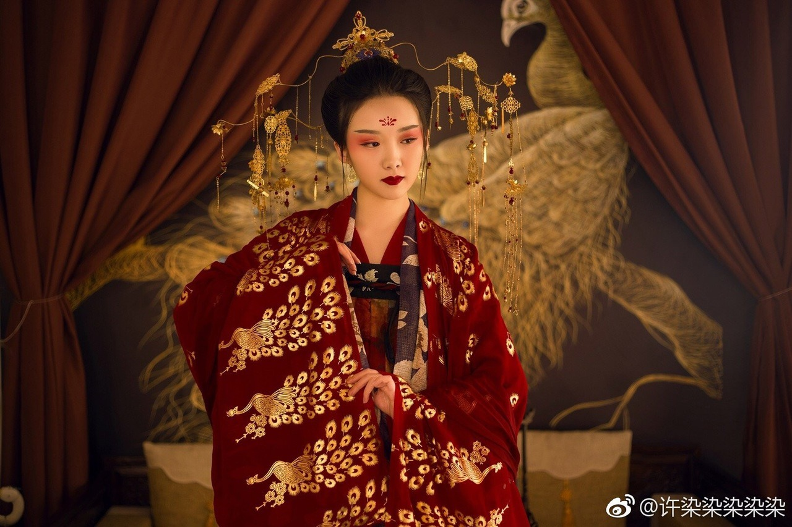

Kína

|
Kína |
|
Kína a világ legősibb folyamatos civilizációja, amely már az ókorban önálló kulturális egységet alkotott, és igen fejlettnek számított. Számos, Európában csak jóval később megismert találmánymár az ókorban vagy a kora-középkorban ismert volt Kínában. Az egységes birodalom (i. e. 221-es) megalakulása óta lényegében egységben, a különböző dinasztiák vezetésével és a többi kultúrától elzárva fejlődött egészen a 19. századig, amikor is az angolok félgyarmati sorba taszították. Egészen a 20. század közepéig a különböző nagy- és középhatalmaknak kiszolgáltatva, közben egy rendszerváltást átélve, 1949-ben a szárazföldön ismét beköszöntött az egység, megalakult a jelenleg is fennálló Kínai Népköztársaság, és az ellenzék kiszorult Tajvan szigetére.
 |
 |  |
Kína történelme a világ történelmében egyedülálló azzal, hogy ez a civilizáció ugyanazon a kontinensnyi méretű területen, több évezreden át folyamatosan fennmaradt, népessége ismereteink szerint mindvégig a legnagyobb volt a világ etnikumai között, és fejlődését az időnkénti súlyos megtorpanások ellenére mindig meg tudta újítani, ezáltal évszázadokon keresztül a világ vezető hatalma tudott maradni, a zűrzavaros időszakokat követően pedig újra és újra azzá válni.